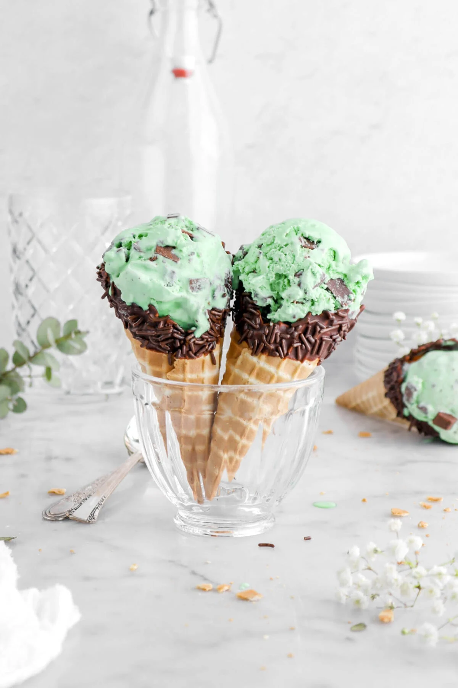

⋆🧸ིྀAbout Me⋆🧸ིྀ
Hello, I am from Florida☀️ and love to go to the beach🌴 and dance. I used to take ballet🩰, tap🥿, lyrical🎵, and I did gymnastics🤸🏾♀️ but I haven't done it since 5th grade. I am now in 7th grade and am moving up to 8th grade very soon. I got into coding because this class is a good way to learn something new and spend my time.
⋆˚꩜｡Things I Like⋆˚꩜｡
- 🕹️ Video games 🎮
- 🎧 Music 🫧
- 🎾 Tennis 👟
- 🔪 Cooking ✨
- 🧷 Crocheting 🧶
- 🍪 Eating 🍓
˚˖𓍢ִ໋❀Fun Facts˚˖𓍢ִ໋❀
-I love a lot of different kinds of music and love to learn new dances🩰.🤍💗
-I love the color teal, light blue, light green, and any other pastel color.✨
- I like coloring, drawing, painting, and anything that involves creativity🎨 and design🧩.⭐💕
- I like cooking and baking, some of my favorite things to cook is cookies🍪, pasta🍝, soup🍲, pie🥧, pancakes🥞, compotes🫐🍓, and really anything that I eat I love to cook.💛